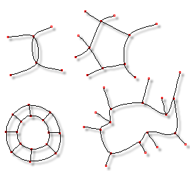

When three or four control points that are not in the same spline define a
patch, that area is always rendered. Therefore, if you want to cause a hole into
the interior of a segment, simply add another control point around the
perimeter of the area, because five control points are too many to define a patch.
While doing this, you will probably affect adjoining patches, so be thoughtful.
When three or four control points that are not in the same spline define a
patch, that area is always rendered. Therefore, if you want to cause a hole into
the interior of a segment, simply add another control point around the
perimeter of the area, because five control points are too many to define a patch.
While doing this, you will probably affect adjoining patches, so be thoughtful.

Holes
The most common way of making a hole is to first draw a looped spline in the shape of the hole, then connect other splines between existing control points and the new “hole” control points.
Make sure when using this technique not to set this hole within a valid patch, because the patch will still draw, covering the hole.
Related Topics:
Splines
Control Points